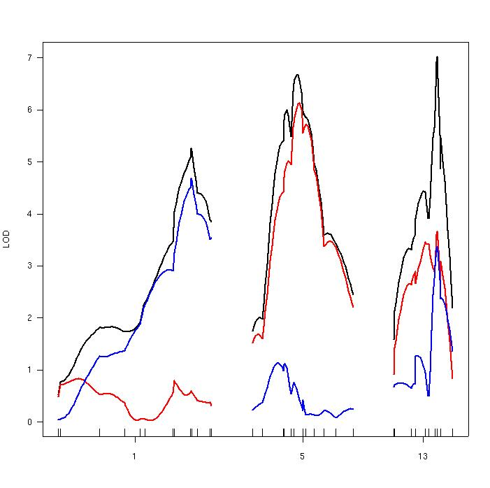

[ Home | Download | FAQ | Status | Bugs | Sample data | Tutorials | Book | Manual | Citation ]
LOD curves for a single-QTL model for a selected set of chromosomes, calculated with the two-part model described by Boyartchuck et al. (2001), Nat Genet 27, 259-260. The ticks below indicate the locations of genetic markers.

[ Home | Download | FAQ | Status | Bugs | Sample data | Tutorials | Book | Manual | Citation ]